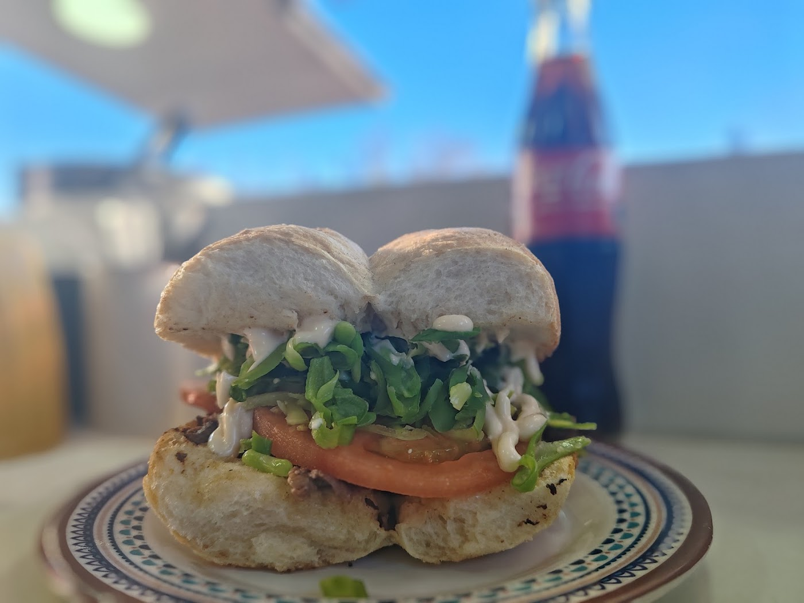

Churrascos
"Los mejores churrascos que he comido del sector. Estaba increíble: el pan blandito, la carne a punto" — cita textual de una reseña real.

Churrascos y sándwiches · Av. Calera de Tango
Churrascos y sándwiches en Av. Calera de Tango 8. Pan blandito, carne a punto y mayo casera. Siete opiniones en Google, las siete de cinco estrellas.
"Los mejores churrascos que he comido del sector. Estaba increíble: el pan blandito, la carne a punto" — cita textual de una reseña real.
Lo que más destaca esa misma reseña: la mayonesa es casera, no de bolsa. "Que es lo mejor", dice.
"Muy buenos sándwiches, precios aterrizados y el dueño es bien amable." Otra reseña suma: productos frescos.
Donde Seba está en Av. Calera de Tango 8, en San Bernardo: churrascos y sándwiches, para comer ahí mismo o para llevar.
Siete opiniones en Google y las siete son de cinco estrellas. Todas dicen lo mismo desde ángulos distintos: el sándwich, el precio y el trato. "Excelente atención, comida exquisita, precios muy buenos, productos frescos. Todo excelente."
Lo de «atendido por su dueño» sale de una reseña real: «el dueño es bien amable».
Arma tu pedido y consúltanos. Según el dato que Google recoge de 5 clientes, el gasto promedio va entre $5.000 y $10.000 por persona.
"Los mejores churrascos que he comido del sector. Estaba increíble: el pan blandito, la carne a punto y la mayo casera, que es lo mejor."
"Muy buenos sándwiches, precios aterrizados y el dueño es bien amable."
"Excelente atención, comida exquisita, precios muy buenos, productos frescos. Todo excelente."
Av. Calera de Tango 8
San Bernardo, Región Metropolitana
—